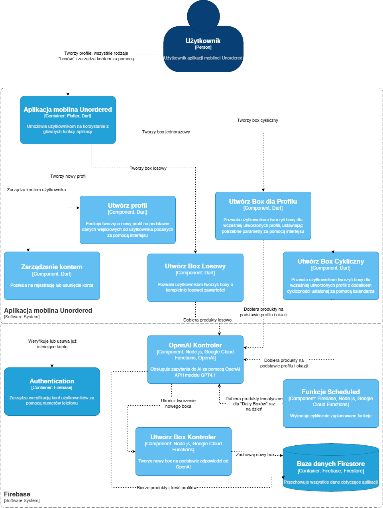

Dokumentacja Backend (Firebase)
Wprowadzenie
W tej sekcji opisano backend aplikacji Unordered, który jest oparty na Firebase, Firestore, Google Cloud Functions oraz OpenAI API. Opis zawiera informacje o strukturze projektu, wymaganiach systemowych, sposobie wdrożenia oraz głównych funkcjonalnościach.
Wymagania systemowe
- Node.js (zalecana wersja zgodna z Google Cloud Functions)
- Google Cloud SDK
- Konto Google Cloud Platform z aktywnym projektem Firebase
Wysokopoziomowy diagram architektury

Wdrożenie
- Przejdź do katalogu
functions/. - Zainstaluj zależności:
npm install - Skonfiguruj zmienne środowiskowe i klucze API patrz sekcja 6.
- Uruchom funkcje lokalnie:
firebase emulators:start
lub wdroż do chmury:
firebase deploy --only functions
Struktura projektu
Główne katalogi i pliki:
functions/– kod źródłowy Cloud Functions:matching/– logika tworzenia boxów (boxy na podst. profilu, boxy losowe, boxy dzienne)openai/– komunikacja z API OpenAI, generowanie rekomendacji produktówproducts/– zarządzanie produktamiprofiles/– zarządzanie profilami użytkownikówstores/– zarządzanie sklepamiorders/– obsługa zamówień (tylko funkcje testowe dla wersji demo)package.json– zależności projektufirebase.json– plik konfiguracyjny Firebase
Główne zależności
- Firebase Admin SDK – dostęp do Firestore, autoryzacja, zarządzanie użytkownikami
- Google Cloud Functions SDK – definiowanie i obsługa funkcji chmurowych
- Axios – wykonywanie zapytań HTTP do zewnętrznych API (np. OpenAI)
- OpenAI API – generowanie rekomendacji produktów
Konfiguracja środowiska
Konfiguracja środowiska obejmuje ustawienie zmiennych środowiskowych, takich jak klucze API do usług zewnętrznych (np. OpenAI), oraz odpowiednich uprawnień konta serwisowego Google Cloud do korzystania z Firestore i Cloud Functions. Klucze i sekrety przechowywane są w pliku .env.local który nie jest dołączany do repozytorium oraz jest bezpiecznie przechowywany w Firebase.
- Przykładowy plik .env.local:
OPENAI_API_KEY=klucz_do_openai
Opis funkcjonalności
- Tworzenie i obsługa boxów:
Użytkownik może utworzyć box na podstawie profilu, budżetu i okazji lub wygenerować box losowy. System korzysta z OpenAI do doboru produktów. - Komunikacja z AI (OpenAI):
Generowanie rekomendacji produktów na podstawie profilu, budżetu, okazji lub losowo. - Zarządzanie użytkownikami i autoryzacją:
Obsługa profili użytkowników, autoryzacja żądań, walidacja uprawnień. - Zarządzanie produktami i sklepami:
Dodawanie, pobieranie i wyszukiwanie produktów oraz sklepów w bazie Firestore.
Funkcjonalność poszczególnych modułów jest opisana na stronie Dokumentacja funkcji chmurowych.